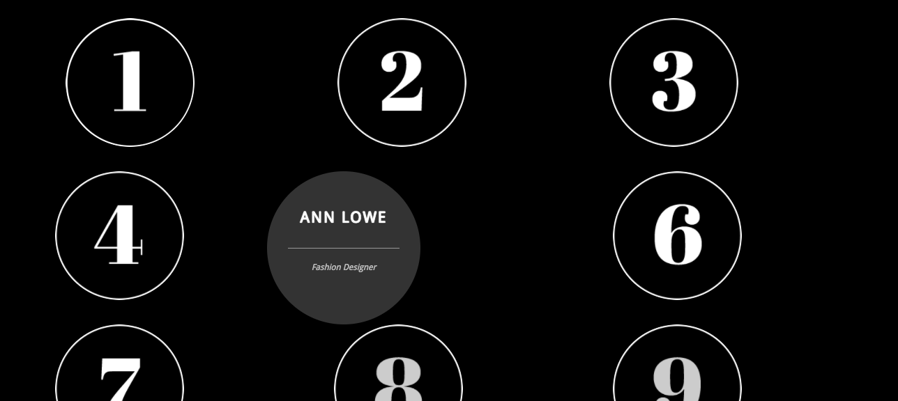

I'm tackling diversity in design head-on it seems. I believe there are roots in design that we owe to people of color and I want to add to some of the platforms out there that highlight and assist POC. Some of the sites I found were pretty broad, like the Design Census of 2016, while others are pretty straightforward that it's a platform by POC for POC.
Utilizing data visulization, Ekene Ijeoma created a site that utilizes webcam blur filter to show the lack of diversity in design. 'White' has the highest visibility, followed by Hispanic, Asian, and finally, Black. With the click of your mouse, the filter will change from clear to blurry depending on the visibility of the ethnicity it's on. In terms of interaction, it's very straightforward once you've authorized the site to access your webcam. The message is also very robust, though since I found it in tandem with the Design Census done by AIGA, I had context as to what it meant. At the end of the visibility journey, the site saves a gif of the visibility transition and you can share it with others. The overall experience is a compelling one, and interactivity is high, although it's not a site you can spend a lot of time on. Regardless, the Ethnic Filter allowed me to look into some of Ekene Ijeoma's work, which allowed me to hone in on my topic moreso.
I found an article on Timothy Goodman, and he's doing some great things for POC alongside his friend Amelie Lamont, who I looked into a little bit more. Turns out she's come up with some great initiatives in helping out POC, specifically with her platform Good for POC, which includes a list of companies that are 'inclusive and safe' for POC in the STEAM industries. Very straightforwared site with links to the companies like Dropbox and Evernote. While it doesn't seem like much, just the platform itself gave me some ideas as to where I'd like to go with my research. The usability is good, and it mirrors a safe space on ther internet much like some in reality. When you click on the company, instead of directing you to their site and throwing you in to doing research yourself, there's actually a fairly descriptive rundown of the company detailing how you know it's safe and inclusive, along with some facts about benefits and perks. In fact, I found that these companies are the ones that have submitted themselves on the site and research was done by Good for POC to ensure that they meet the criteria. The hiring process and where to apply is located near the end of the description. The content is easy to use, straightforward, and it sends a great message. While this wasn't necessarily in the realm of design, it got me thinking some more about how a platform like this can extend to something like design.
Some honorable mentions that helped me along with my research were People of Craft, which is an initiative that showcases 'creatives of color'. It's message is to 'redefine what creative looks like', tying back to my interest in how the roots of design include people of color.
28 Days of Black Designers is self-explanatory, though I'd like to point out that their site is very minimalistic, but it seems to utilize JS very nicely. When hovering over the numbers, another circle slides on over with the name of a black designer and their work title. When you click on the number, it'll bring you over onto their page with an interview with the designer and their work. This is a great platform that promotes black designers, and helped me think about ways I can incorporate showcasing the works of others, while still conveying an important message about diversity in design.